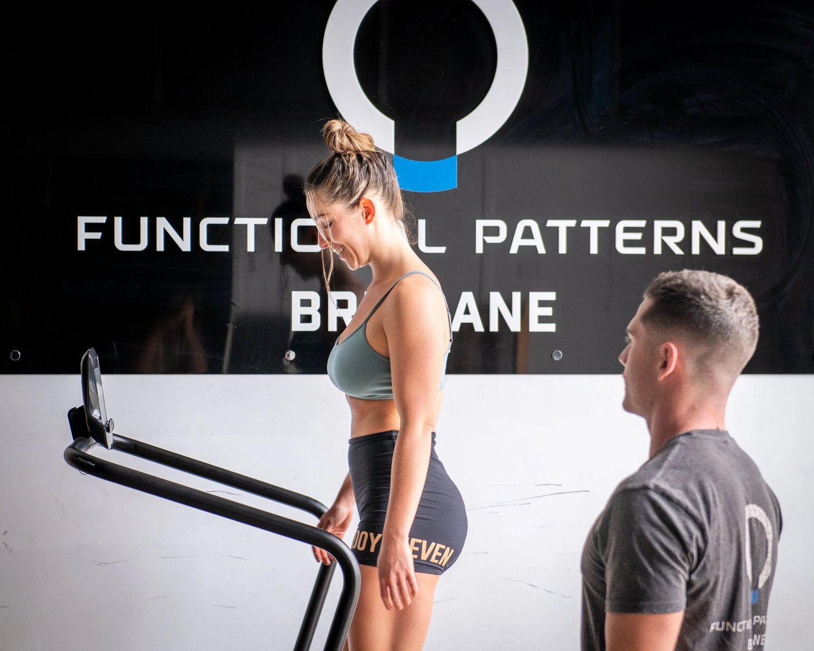

Are you tired of running injuries that keep coming back? Or wondering why your running form doesn’t feel smooth, even with all the right shoes and strength training?
At Functional Patterns Brisbane, we look at running from a deeper perspective—through the lens of biomechanics and human evolution. Our unique approach to running gait analysis goes beyond the surface. We don’t just look at how your foot lands. We study how your entire body moves through the gait cycle—from head to toe.
If you’re searching for a running gait test or gait assessment running in Brisbane, you’re in the right place.
What Is Running Gait and Why It Matters
Your gait is the way you move through space. In running, this means how your limbs, core, and spine coordinate to move you forward.
A dysfunctional running gait doesn’t just slow you down—it increases your risk of injury, wastes energy, and often leads to chronic pain.
Poor running technique is the hidden cause behind many common running injuries like:
-
Shin splints
-
IT band syndrome
-
Plantar fasciitis
-
Runner’s knee
-
Hip and lower back pain
The solution? A detailed, holistic running gait analysis that shows you exactly what needs to change.

Why Functional Patterns Running Analysis Is Different
Most running assessments only focus on the lower body. Some use slow motion cameras to track your stride. Others use force plates or give generic tips like “shorten your stride” or “improve your posture.”
We go far deeper.
At Functional Patterns Brisbane, we use real-time video gait analysis. However, we also offer much more than what you see on camera.
Our running gait analysis looks at:
-
How your arm swing coordinates with your legs
-
Whether your spine and ribs rotate properly during the stride
-
How your breathing affects your trunk stability and running economy
-
Where your heel strikes, and what that says about your stance phase
-
How your joints stack during contact with the ground
-
How imbalances elsewhere in your body create leaks in power and stability
This is not your average gait assessment for running. This is functional biomechanics in action—built around how your body evolved to run in the first place.

How Correcting Running Gait Affects Posture & Joint Stacking!
Stop Guessing. Get Real Answers.
Most runners focus only on training harder or stretching more. But without fixing your running form, you’ll just repeat the same injuries in a stronger body.
We help runners:
-
Improve their running style without forcing it
-
Develop better timing and coordination in the gait cycle
-
Build power and efficiency in each step
-
Reduce overuse and wear-and-tear on joints
-
Get back to running pain-free—and stay that way
We don’t give band-aid solutions. We rebuild your movement from the ground up.

Who Needs a Running Assessment?
If you’ve ever wondered:
-
“Why do I get injured every time I run more than 5km?”
-
“Why does running feel hard even when I’m fit?”
-
“Why can’t I maintain good posture when I run?”
-
“How do I improve my running economy without risking injury?”
Then you need a running gait assessment with us.
You don’t have to be a pro. Whether you jog on weekends or run competitively, you can improve by learning to run better, not just harder.
Brisbane’s Functional Approach to Running Form
There are many running coaches out there. But most don’t have the tools to assess full-body biomechanics. Some focus only on strength training. Others give cue-based tips like “lift your knees” or “lean forward.”
At Functional Patterns Brisbane, we teach you how to run the way your body was designed to run. We don’t force your body into a new shape. We guide it back to its natural efficiency.
That’s why our clients say they feel stronger, lighter, and more stable after just a few sessions.
What Happens During a Running Gait Test?
-
Initial Gait Assessment (90 minutes)
-
We film you walking and running. We assess your posture, breathing, joint stacking, rotation, and timing. Then we identify where your running form breaks down.
-
Analysis and Planning
-
We explain in simple terms where your pain or inefficiency is coming from. Then we design a customized running improvement plan to restore function—without creating compensation patterns.
-
Corrective Movement Training
-
We train your entire body to move better. You’ll learn how to correct your gait through coordinated movement—not stretching, foam rolling, or isolation exercises.
-
Retest and Reinforce
-
Once the foundations are in place, we retest your running gait to confirm your improvements. Then we build on them to enhance speed, efficiency, and injury prevention.

Reduce Your Risk of Running Injuries for Good
If you’ve been sidelined by injuries or stuck in a cycle of pain and rest, we’ll help you break free.
Our system is built on injury prevention by improving the function of your entire kinetic chain. When your arms, trunk, and legs move in harmony, your risk of injury drops dramatically.
This isn’t about quick fixes or trendy gear. It’s about long-term, sustainable results.
Book Your Running Gait Assessment Today
Searching for:
-
Running gait analysis Brisbane
-
Running gait test near me
-
Gait assessment running Brisbane
-
Running assessment for injury prevention
We’ve got you covered.
At Functional Patterns Brisbane, we combine advanced biomechanics with real-world results. If you're serious about improvement run performance, reducing injuries, or reclaiming natural movement— we’re here to help.
It’s Time to Run Better
Your running technique shouldn’t wear you down. It should support you—step after step.
Whether your goal is to run faster, prevent injury, or just feel better when you move, it all starts with fixing your gait.
Book your running gait analysis now. Take the first step toward strong, pain-free running. This is based on how the human body is meant to move.